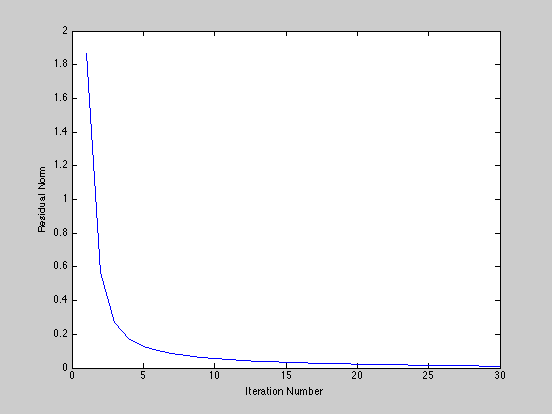

Nonnegative matrix factorization
m = 10; n = 10; k = 5;
A = rand(m,k)*rand(k,n);
Y = rand(m,k);
MAX_ITERS = 30;
residual = zeros(1,MAX_ITERS);
for iter = 1:MAX_ITERS
cvx_begin
cvx_quiet(true);
if mod(iter,2) == 1
variable X(k,n)
else
variable Y(m,k)
end
X >= 0;
Y >= 0;
minimize(norm(A - Y*X,'fro'));
cvx_end
fprintf(1,'Iteration %d, residual norm %g\n',iter,cvx_optval);
residual(iter) = cvx_optval;
end
plot(residual);
xlabel('Iteration Number');
ylabel('Residual Norm');
disp( 'Original matrix:' );
disp( A );
disp( 'Left factor Y:' );
disp( Y );
disp( 'Right factor X:' );
disp( X );
disp( 'Residual A - Y * X:' );
disp( A - Y * X );
fprintf( 'Residual after %d iterations: %g\n', iter, cvx_optval );
Iteration 1, residual norm 1.86932
Iteration 2, residual norm 0.566995
Iteration 3, residual norm 0.267138
Iteration 4, residual norm 0.171482
Iteration 5, residual norm 0.127534
Iteration 6, residual norm 0.103956
Iteration 7, residual norm 0.0869771
Iteration 8, residual norm 0.073903
Iteration 9, residual norm 0.0636543
Iteration 10, residual norm 0.0557063
Iteration 11, residual norm 0.0493255
Iteration 12, residual norm 0.0444955
Iteration 13, residual norm 0.0403932
Iteration 14, residual norm 0.0370236
Iteration 15, residual norm 0.0340481
Iteration 16, residual norm 0.031512
Iteration 17, residual norm 0.0291766
Iteration 18, residual norm 0.0270564
Iteration 19, residual norm 0.0250407
Iteration 20, residual norm 0.0231863
Iteration 21, residual norm 0.0214214
Iteration 22, residual norm 0.019795
Iteration 23, residual norm 0.0182535
Iteration 24, residual norm 0.0168345
Iteration 25, residual norm 0.0154962
Iteration 26, residual norm 0.014266
Iteration 27, residual norm 0.0131115
Iteration 28, residual norm 0.0120516
Iteration 29, residual norm 0.0110612
Iteration 30, residual norm 0.0101531
Original matrix:
Columns 1 through 9
0.7559 1.4563 1.7685 1.3074 1.2489 1.5612 1.5327 1.7439 0.4421
1.0993 1.4136 1.6149 0.7909 1.1404 1.2832 1.7866 1.1989 0.5109
1.3363 2.2560 2.6432 1.4672 1.9134 2.0245 2.2989 1.9421 1.1127
1.1626 1.6477 1.8250 1.0968 1.2599 1.6324 1.9835 1.7748 0.3828
0.7126 1.6997 1.6962 1.2922 1.3919 1.6250 1.5037 1.9775 0.5892
0.7882 1.5156 1.5913 1.1120 1.2737 1.4507 1.5553 1.6453 0.5236
1.3521 1.9869 2.3577 1.3465 1.5314 1.9490 2.2293 2.0155 0.6314
1.1611 1.5820 2.0198 0.9089 1.2605 1.4140 1.7440 1.1955 0.7857
0.6769 1.3164 1.3805 0.9933 1.1803 1.2526 1.4187 1.3869 0.4916
1.1486 1.5058 1.7768 0.9874 1.2185 1.4741 1.9368 1.4569 0.4394
Column 10
1.6600
0.6115
1.7473
0.9714
1.5571
1.2387
1.4172
1.0142
1.1019
0.8726
Left factor Y:
0.3151 1.4784 0.1993 0.0075 0.4508
0.4093 0.0000 0.2318 0.8815 0.6898
0.8796 0.3457 1.2056 0.2384 0.8180
0.0000 0.9150 0.0161 1.0643 0.6823
0.1524 1.1798 0.9623 0.4620 0.0139
0.3667 0.7515 0.6392 0.5431 0.1752
0.0479 1.1503 0.2234 0.6892 1.0415
0.4181 0.1382 0.5288 0.1823 1.0947
0.6381 0.4329 0.6133 0.4620 0.0343
0.3564 0.4828 0.0000 0.8470 0.7496
Right factor X:
Columns 1 through 9
0.3430 0.5360 0.7209 0.5724 0.6606 0.5925 0.8630 0.5220 0.2236
0.1859 0.5498 0.6173 0.6174 0.4752 0.6616 0.5307 0.8670 0.0690
0.2239 0.7102 0.6510 0.3502 0.5381 0.5132 0.3603 0.5860 0.4660
0.4667 0.5971 0.4681 0.2924 0.4453 0.5439 0.8379 0.6618 0.0429
0.7202 0.7284 1.0995 0.3160 0.5051 0.6434 0.8829 0.3900 0.3914
Column 10
0.6670
0.8134
0.5107
0.0000
0.3222
Residual A - Y * X:
Columns 1 through 9
0.0002 0.0001 -0.0002 -0.0003 -0.0001 -0.0001 0.0001 0.0000 -0.0000
-0.0012 0.0008 -0.0021 -0.0003 0.0043 -0.0016 0.0022 -0.0029 0.0035
0.0001 0.0000 -0.0001 -0.0001 -0.0000 -0.0000 0.0000 0.0000 -0.0000
0.0008 0.0007 0.0013 -0.0007 -0.0022 0.0008 -0.0020 0.0016 -0.0006
-0.0001 -0.0000 0.0001 0.0001 0.0000 0.0000 -0.0000 -0.0000 0.0000
-0.0001 -0.0000 0.0001 0.0001 0.0000 0.0000 -0.0000 -0.0000 0.0000
0.0000 0.0000 -0.0000 -0.0000 -0.0000 -0.0000 0.0000 0.0000 -0.0000
0.0001 0.0001 -0.0001 -0.0002 -0.0000 -0.0000 0.0001 0.0000 -0.0000
-0.0001 -0.0000 0.0001 0.0001 0.0000 0.0000 -0.0000 -0.0000 0.0000
0.0014 -0.0024 0.0012 0.0008 -0.0021 0.0004 0.0015 -0.0006 -0.0033
Column 10
0.0002
-0.0022
0.0001
-0.0009
-0.0001
-0.0001
0.0000
0.0001
-0.0001
0.0006
Residual after 30 iterations: 0.0101531
